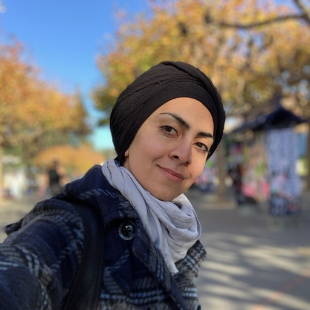

About the Authors
Atit Wongnophadol, (Information and Data Science Graduate Student, UC Berkeley): Product Manager
Contact: aw2305@ischool.berkeley.edu
Atit is an ML product leader at True Digital Group in Thailand, currently focusing on developing personalisation services for consumer lifestyle App.
Atit is also a veteran in the financial industry in the U.S., where he spent most time in his career. Prior to UC Berkeley, Atit earned a Master degree
in Management Engineering System from Columbia University in NYC, and a Bachelor degree in Statistics with first-class honour from Kasetsart University in Bangkok, Thailand.
Jacob Tosh, (Information and Data Science Graduate Student, UC Berkeley): Software Engineer
Contact: jaketosh@ischool.berkeley.edu
Jacob is currently a software engineer at Full Financials LLC, a small company that focuses on identifying fraud in the nursing home industry. He earned
his Bachelor of Science in computer science from University of Texas, Austin. He hopes to make nursing homes safer and more effective through the use of his
data science and computer science skills.
Mahdieh Taher, (Information and Data Science Graduate Student, UC Berkeley): Data Engineer
Contact: taher@ischool.berkeley.edu

Mahdieh is a data engineer at ViacomCBS. She is responsible for building, deploying and MLOps of machine learning models for Paramount+
subscription platform. Prior to ViacomCBS, she was data scientist at the Carlson Lab in University of Minnesota for 3 years. She is Google Cloud certified Solution Architect.
Mumin Khan, (Information and Data Science Graduate Student, UC Berkeley): Data Scientist
Contact: mumin@ischool.berkeley.edu
Mumin is currently a senior software engineer at NASA, JPL. He is responsible for developing distributed science data systems for NASA's Surface Water and
Ocean Topography (SWOT) mission that brings together oceanographers and hydrologists to better understand the world’s oceans and terrestrial surface waters.